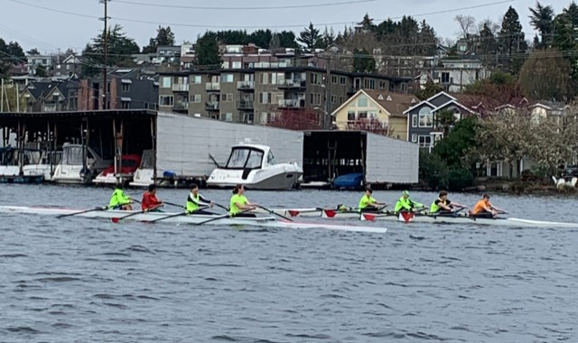
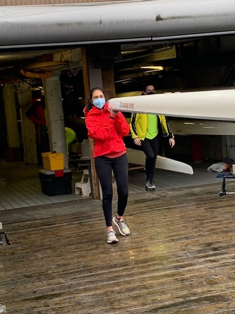
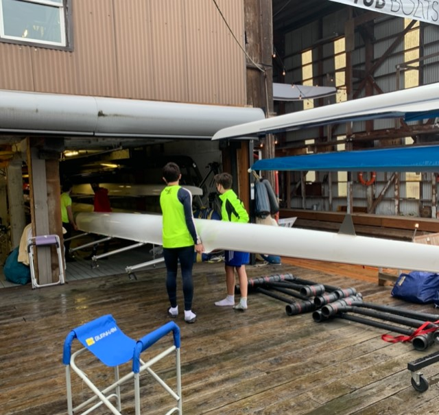
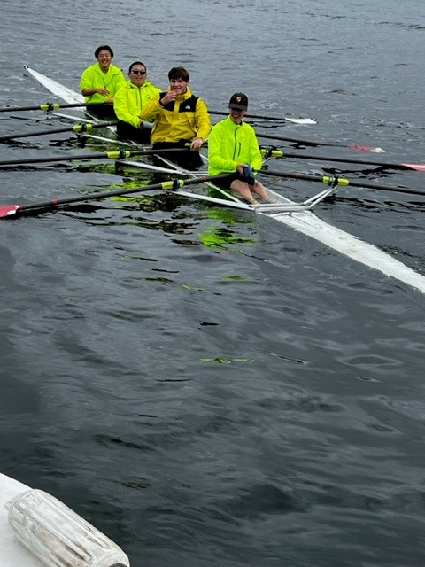
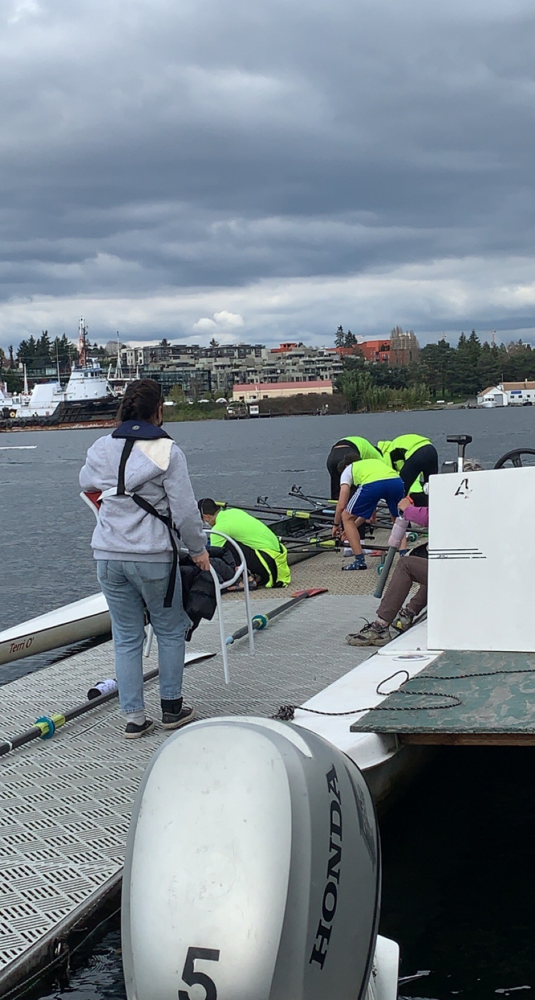
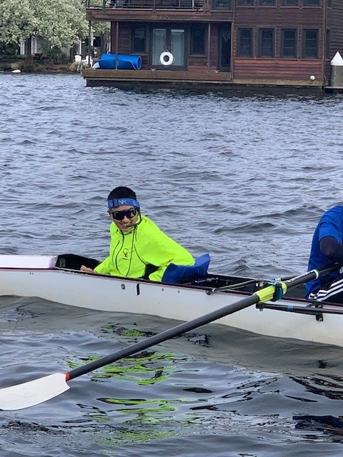

Sometimes, rowing can be really complicated. It can help to see visuals of how things work at the boathouse, and how rowing should look. Here are some photos of the EPS rowing team that I took while I was riding on the safety launch.
Here is an example of quads matching: notice how their oars are in sync and the bow is watching behind them.
This is how you hold a boat on your shoulder when taking it out of the boathouse.
This is an example of holding the boat at your waist while putting it away.
This is what happens when there are inconsiderate boaters who don't slow down around rowers.
Here is how you attach your oars to the riggers on the boat.
Here is an example of how a coxswain looks in a boat.